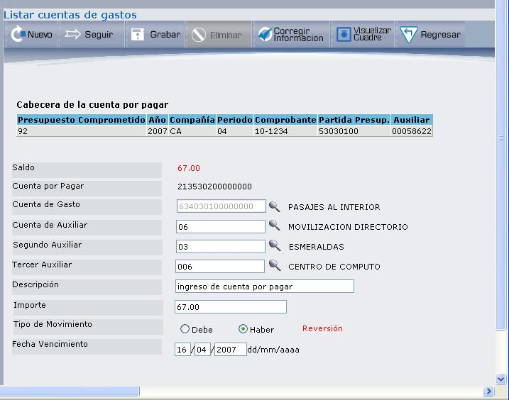
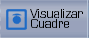

Opción 1: Modificar Cuenta de Gasto
Al seleccionar la opción “1”, desde la pantalla de la Figura 3.39, se presenta la pantalla que muestra la Figura 3.43, la misma que permite modificar el detalle de una cuenta de gasto.
Si desea crear una nueva cuenta de gasto presione el botón NUEVO, se presentarán los campos que muestra la Figura 3.43.

Figura 3. Registro de Cuenta de Gasto.
Esta pantalla se ha dividido en dos secciones para una mejor explicación:
SECCIÓN 1:
Despliega la cabecera de la cuenta por pagar.
SECCIÓN 2:
Presenta la siguiente información, que puede ser actualizada, en el caso de que sea un gasto existente y desee modificarlo. Si se trata de un nuevo gasto tome en cuenta los campos que se describen a continuación:
Saldo:
Despliega el saldo existente.
Cuenta por Pagar:
Despliega la cuenta por pagar.
Cuenta de Gasto:
Despliega la cuenta de Gasto. En caso de que esté registrando un nuevo gasto, digite el código de gasto o presione el ícono , que despliega la lista de cuentas de gastos.
Cuenta de Auxiliar: …….Tercer Auxiliar:
Se debe complementar con el auxiliar si la cuenta así lo requiere.
Descripción:
Digite la descripción de la cuenta de gastos que desea registrar.
Importe:
Una vez ingresados los datos de la cuenta de gasto se debe ingresar el valor del gasto, este valor es sugerido en base al total de la partida pero puede ser modificado de acuerdo a las necesidades.
Tipo de Movimiento:
Marque el casillero de selección correspondiente al tipo de movimiento que está registrando (Debe o Haber).
Fecha Vencimiento:
Digite la fecha de vencimiento de acuerdo con el valor DEBE/HABER, según esté definida la Cuenta de Mayor.
Si creó o actualizó presione el botón GRABAR, el mismo que regresa a la pantalla de listado de Cuentas de Gastos.
BOTONES


Figura 3. Visualizar Cuadre de Cuentas por Pagar.
Created with the Personal Edition of HelpNDoc: Free EBook and documentation generator